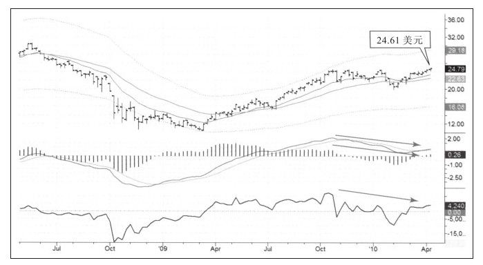
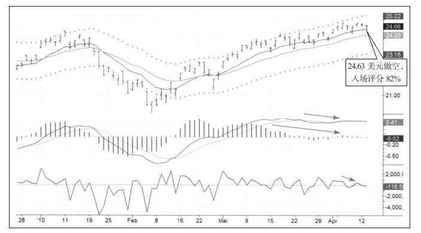
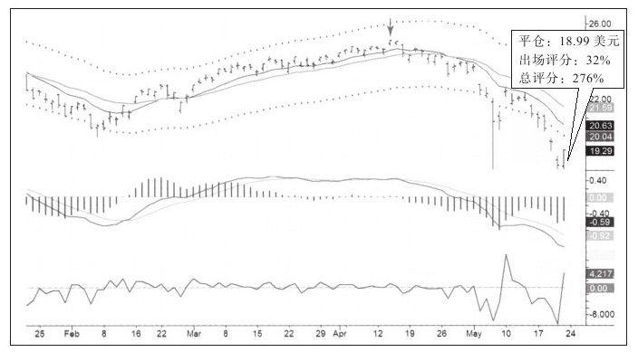

我第一次看到这幅图（见图10-11）的时间是2010年4月的一个星期天，当时我正在纽约讲课，教室里有两个澳大利亚人，我在教室里挂起了两幅图，一幅是MSCI澳洲指数基金（EWA），另一幅是我从未交易过的澳洲指数ETF。周线图反映出令人兴奋的信号，始于2009年3月底部开始的上涨走到了尽头，EWA走出双顶形态，只差几美分周线图的组合系统就会由绿变蓝，如果这个条件达到，我们会有一个完美的周线MACD柱、MACD线和FI的顶背离。于是我就看它的日线走势图（见图10-12）。


日线图给出的信号与周线的信号非常像，周二，在组合系统变蓝后，我开始做空。并把止损设在近期高点之上，我每股承担的风险只有几美分，意味着我可以以很低的风险做空更多股票。
随后价格加速下跌，我一直持有这些空单（如图10-13所示），即便EWA跌到日线通道下轨附近我仍然持有，因为组合系统仍然是红色。当小反弹发生时，我正在亚洲旅行，没有看到行情，错过了绝佳的获利了结的机会。还好，我对自己的经验比较有信心，快速下跌通常会有一次恢复性反弹，尔后股价会再去测试快速下跌创出的低点，低成交量的二次测试。这也在EWA身上发生了，于是当日线组合系统变蓝时，我在前期低点不远处平掉了所有空单。

本次交易心得：值得拥有一套简单的交易系统，风险相对较小，方案在脑中，并以平静和放松的方式实施计划。